Note
このページは Jupyter Notebook から生成されました。 ノートブックをダウンロード (.ipynb)
[ ]:
# Install gwexpy with pinned versions of core dependencies for reproducibility on Colab
%pip install -q "gwexpy[all]" "gwpy<5.0.0" "numpy<2.0.0" "scipy<1.13.0" "astropy<7.0.0"
スペクトログラム: 正規化とクリーニング

このチュートリアルでは gwexpy が提供するスペクトログラム後処理ツール 2 種類を解説します：
API |
目的 |
|---|---|
|
生パワーを SNR や相対単位に変換 |
|
グリッチ・トレンド・持続的ラインの除去 |
前提: スペクトログラム入門
[1]:
import warnings
warnings.filterwarnings("ignore", category=UserWarning)
warnings.filterwarnings("ignore", category=DeprecationWarning)
import matplotlib.pyplot as plt
import numpy as np
from gwexpy.timeseries import TimeSeries
plt.rcParams["figure.figsize"] = (12, 4)
1. 合成データの準備
以下を含む 2 分間の strain 時系列を生成します：
定常ガウスノイズ（ゆっくり変化する振幅 → 非定常）
60 Hz 持続ライン（電源ハム）
過渡グリッチ（15 s, 45 s, 90 s）
[2]:
# ── Reproducible seed ────────────────────────────────────────────────────────
rng = np.random.default_rng(42)
DURATION = 120 # seconds
FS = 512 # Hz
FFTLEN = 4.0 # s
STRIDE = 2.0 # s
t = np.arange(0, DURATION, 1 / FS)
# Base: flat noise (simulate whitened strain)
base_noise = rng.normal(0, 1.0, len(t))
# Add persistent narrowband line at 60 Hz (power line)
line60 = 3.0 * np.sin(2 * np.pi * 60 * t)
# Add slowly drifting broadband noise floor (non-stationary trend)
trend = 1.0 + 0.5 * np.sin(2 * np.pi * t / DURATION)
# Add a few transient glitches (excess-power bursts)
glitch_times = [15.0, 45.0, 90.0]
glitch_signal = np.zeros_like(t)
for gt in glitch_times:
idx = int(gt * FS)
width = int(0.05 * FS)
glitch_signal[idx : idx + width] += rng.normal(0, 8.0, width)
strain = (base_noise * trend) + line60 + glitch_signal
ts = TimeSeries(strain, dt=1.0 / FS, name="STRAIN", unit="strain")
spec = ts.spectrogram2(FFTLEN, overlap=FFTLEN / 2)
print("Spectrogram shape (time × freq):", spec.shape)
print("Time bins:", spec.shape[0], " | Freq bins:", spec.shape[1])
Spectrogram shape (time × freq): (60, 1025)
Time bins: 60 | Freq bins: 1025
2. ベースライン スペクトログラム
生スペクトログラムには、グリッチ（明るい縦縞）、60 Hz ライン（明るい横縞）、 時間変動するノイズフロアがすでに見えています。
[3]:
import warnings
with warnings.catch_warnings():
warnings.simplefilter('ignore')
_plt5 = spec.plot(norm="log", figsize=(12, 4))
ax = _plt5.gca()
ax.set_title("Raw spectrogram")
_plt5.colorbar(label="Power [strain²/Hz]")
with warnings.catch_warnings():
warnings.filterwarnings("ignore", message="This figure includes Axes that are not compatible with tight_layout")
plt.tight_layout()
plt.show()
plt.tight_layout()
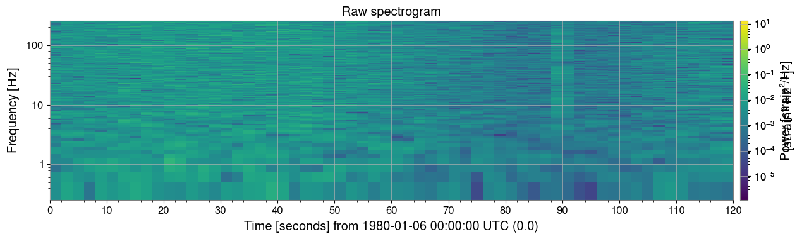
3. 正規化
3a. SNR スペクトログラム (method='snr')
過渡現象探索で最もよく使われる正規化：各時刻スライスを時間軸方向の 中央値 PSD で割ります。
結果は無次元の SNR² マップで、定常背景 ≈ 1 になります。
[4]:
import warnings
with warnings.catch_warnings():
warnings.simplefilter('ignore')
# ── SNR normalization ─────────────────────────────────────────────────────────
# Each time slice is divided by the median PSD along the time axis.
# Result: dimensionless SNR² (≈ 1 for stationary background).
spec_snr = spec.normalize(method="snr")
fig, axes = plt.subplots(1, 2, figsize=(14, 4))
_pc0 = axes[0].pcolormesh(spec.times.value, spec.frequencies.value, spec.value.T, norm=__import__("matplotlib.colors", fromlist=["LogNorm"]).LogNorm(), cmap="viridis", shading="auto")
fig.colorbar(_pc0, ax=axes[0], label="Power [strain²/Hz]")
spec_snr.plot(ax=axes[1], norm="log", vmin=0.1, vmax=100)
axes[1].set_title("SNR spectrogram (normalize='snr')")
fig.colorbar(next((c for c in axes[1].get_children() if hasattr(c, "get_clim")), None) or __import__("matplotlib.cm", fromlist=["ScalarMappable"]).ScalarMappable(), ax=axes[1], label="SNR² [dimensionless]")
with warnings.catch_warnings():
warnings.filterwarnings("ignore", message="This figure includes Axes that are not compatible with tight_layout")
plt.tight_layout()
plt.show()
plt.tight_layout()

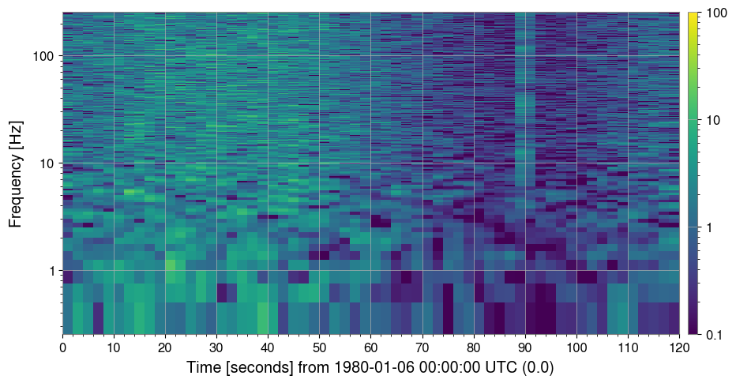
3b. その他の正規化メソッド
|
分母 |
|---|---|
|
周波数ビン毎の中央値 PSD（ |
|
周波数ビン毎の平均 PSD |
|
第 N パーセンタイル PSD（ |
[5]:
import warnings
with warnings.catch_warnings():
warnings.simplefilter('ignore')
# ── Compare normalization methods ─────────────────────────────────────────────
methods = ["median", "mean", "percentile"]
fig, axes = plt.subplots(1, 3, figsize=(18, 4))
for ax, m in zip(axes, methods):
kw = {"percentile": 75.0} if m == "percentile" else {}
spec_n = spec.normalize(method=m, **kw)
spec_n.plot(ax=ax, norm="log", vmin=0.1, vmax=100)
label = f"percentile=75" if m == "percentile" else ""
ax.set_title(f"method='{m}' {label}")
fig.colorbar(next((c for c in ax.get_children() if hasattr(c, "get_clim")), None), ax=ax, label="SNR² []")
plt.suptitle("Normalization methods comparison", fontsize=13)
with warnings.catch_warnings():
warnings.filterwarnings("ignore", message="This figure includes Axes that are not compatible with tight_layout")
plt.tight_layout()
plt.show()
plt.tight_layout()
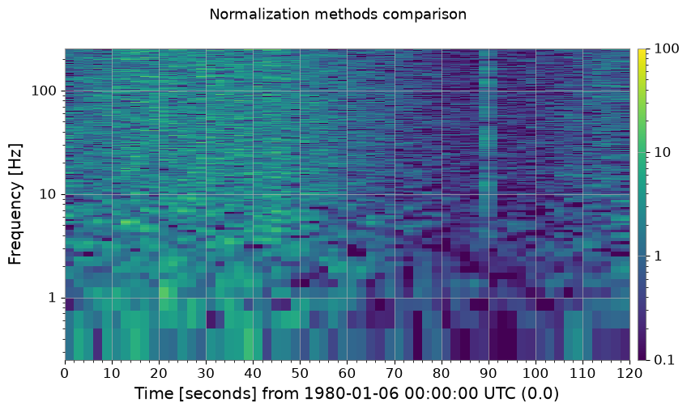
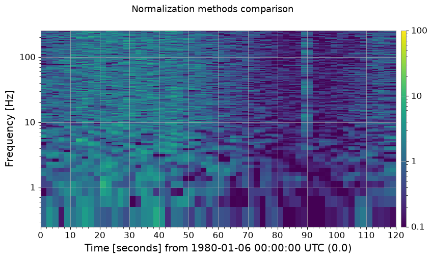

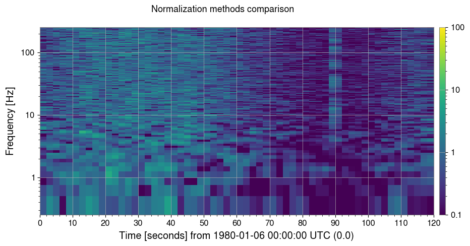
3c. 参照スペクトル正規化 (method='reference')
独自の参照スペクトルを渡して正規化します。
特定の静粛期間や独立計測したノイズフロアとの比較に有用です。
[6]:
import warnings
with warnings.catch_warnings():
warnings.simplefilter('ignore')
# ── Reference normalization ───────────────────────────────────────────────────
# Use the first 30 s as a quiet reference segment.
quiet_ts = ts.crop(0, 30)
ref_spec = quiet_ts.spectrogram2(FFTLEN, overlap=FFTLEN / 2)
reference_psd = np.median(ref_spec.value, axis=0) # median over the 30-s window
spec_ref = spec.normalize(method="reference", reference=reference_psd)
fig, ax = plt.subplots(figsize=(12, 4))
spec_ref.plot(ax=ax, norm="log", vmin=0.1, vmax=100)
ax.set_title("Reference-normalized spectrogram (30-s quiet baseline)")
fig.colorbar(next((c for c in ax.get_children() if hasattr(c, "get_clim")), None), ax=ax, label="SNR² []")
with warnings.catch_warnings():
warnings.filterwarnings("ignore", message="This figure includes Axes that are not compatible with tight_layout")
plt.tight_layout()
plt.show()
plt.tight_layout()

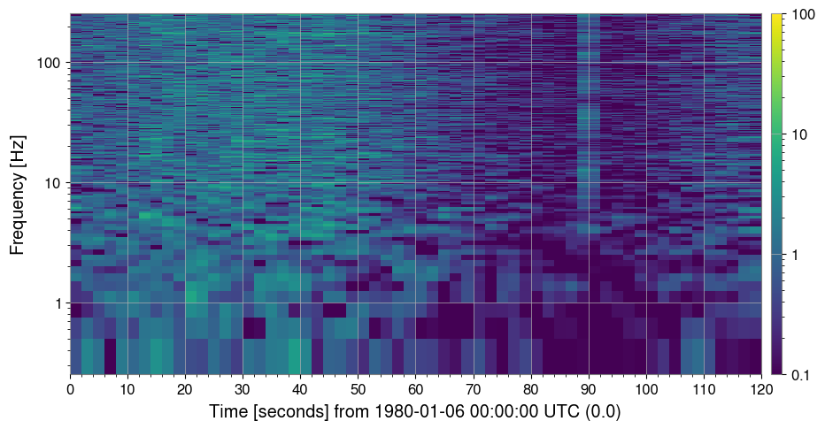
4. クリーニング
4a. 閾値クリーニング (method='threshold')
周波数ビン毎に
中央値 + threshold × MAD を超えるピクセルを外れ値として検出し、 fill= で指定した方法で置換します。短時間のグリッチ（明るい縦縞）を除去するのに適しています。
[7]:
import warnings
with warnings.catch_warnings():
warnings.simplefilter('ignore')
# ── threshold cleaning ────────────────────────────────────────────────────────
# Pixels exceeding median + threshold × MAD are replaced.
spec_thr, mask = spec_snr.clean(method="threshold", threshold=5.0, return_mask=True)
print(f"Flagged pixels: {mask.sum()} / {mask.size}"
f" ({100 * mask.mean():.2f} %)")
fig, axes = plt.subplots(1, 2, figsize=(14, 4))
spec_snr.plot(ax=axes[0], norm="log", vmin=0.1, vmax=100)
axes[0].set_title("SNR spectrogram (before threshold clean)")
fig.colorbar(next((c for c in axes[0].get_children() if hasattr(c, "get_clim")), None) or __import__("matplotlib.cm", fromlist=["ScalarMappable"]).ScalarMappable(), ax=axes[0], label="SNR²")
spec_thr.plot(ax=axes[1], norm="log", vmin=0.1, vmax=100)
axes[1].set_title("After threshold clean (threshold=5 MAD)")
fig.colorbar(next((c for c in axes[1].get_children() if hasattr(c, "get_clim")), None) or __import__("matplotlib.cm", fromlist=["ScalarMappable"]).ScalarMappable(), ax=axes[1], label="SNR²")
with warnings.catch_warnings():
warnings.filterwarnings("ignore", message="This figure includes Axes that are not compatible with tight_layout")
plt.tight_layout()
plt.show()
Flagged pixels: 2096 / 61500 (3.41 %)
plt.tight_layout()


4b. ローリング中央値デトレンド (method='rolling_median')
時間軸に沿ったローリング中央値で各列を割ります。
短時間特徴を歪めずにゆっくりとした非定常トレンドを除去します。
[8]:
import warnings
with warnings.catch_warnings():
warnings.simplefilter('ignore')
# ── rolling-median cleaning ───────────────────────────────────────────────────
# Divide by a rolling median along the time axis to remove slow trends.
spec_roll = spec.clean(method="rolling_median", window_size=10)
fig, axes = plt.subplots(1, 2, figsize=(14, 4))
spec.plot(ax=axes[0], norm="log")
axes[0].set_title("Raw spectrogram")
fig.colorbar(next((c for c in axes[0].get_children() if hasattr(c, "get_clim")), None) or __import__("matplotlib.cm", fromlist=["ScalarMappable"]).ScalarMappable(), ax=axes[0], label="Power")
spec_roll.plot(ax=axes[1], norm="log")
axes[1].set_title("After rolling-median detrend (window=10 bins)")
fig.colorbar(next((c for c in axes[1].get_children() if hasattr(c, "get_clim")), None) or __import__("matplotlib.cm", fromlist=["ScalarMappable"]).ScalarMappable(), ax=axes[1], label="Normalised power []")
with warnings.catch_warnings():
warnings.filterwarnings("ignore", message="This figure includes Axes that are not compatible with tight_layout")
plt.tight_layout()
plt.show()
plt.tight_layout()
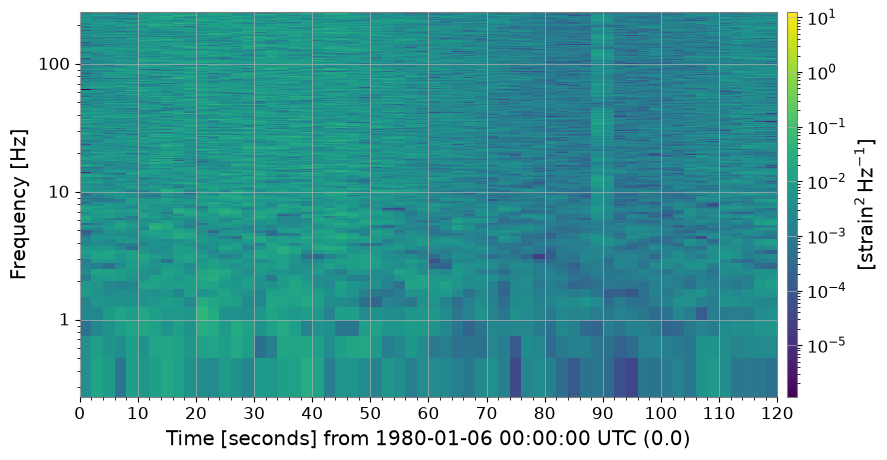
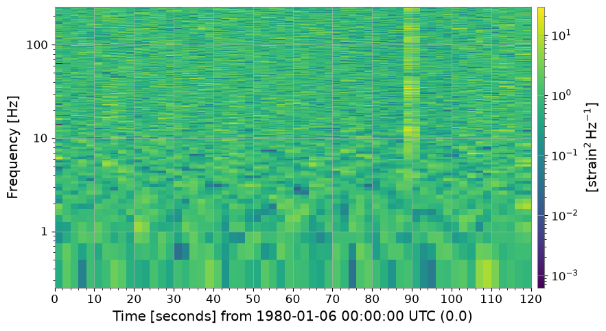
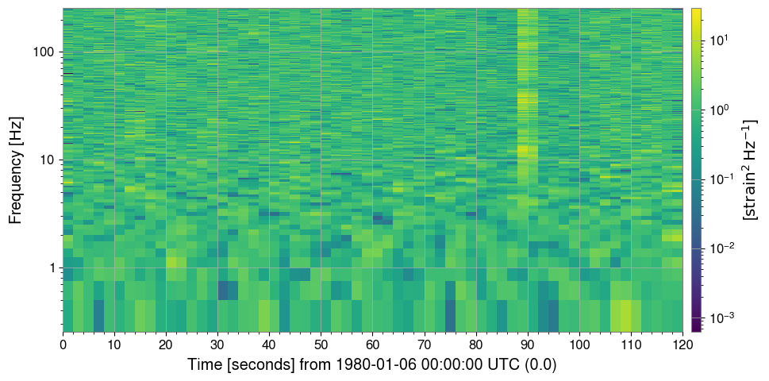
4c. 持続ライン除去 (method='line_removal')
時間ビンの persistence_threshold 割以上で amplitude_threshold × 全体中央値 を 超える周波数ビンを持続ラインとして検出し、時間方向の中央値で置換します。
[9]:
import warnings
# ── line-removal cleaning ─────────────────────────────────────────────────────
# Detect persistent narrowband lines and replace with column median.
spec_noline, line_indices = spec_snr.clean(
method="line_removal",
persistence_threshold=0.8,
amplitude_threshold=3.0,
return_mask=True,
)
# line_indices is a bool mask here; retrieve actual frequency values
freq_axis = spec.frequencies.value
if hasattr(line_indices, "sum"): # ndarray mask
flagged_freqs = freq_axis[np.any(line_indices, axis=0)]
else:
flagged_freqs = freq_axis[line_indices]
print("Detected line frequencies [Hz]:", np.round(flagged_freqs, 1))
fig, axes = plt.subplots(1, 2, figsize=(14, 4))
spec_snr.plot(ax=axes[0], norm="log", vmin=0.1, vmax=100)
axes[0].set_title("SNR spectrogram (with 60 Hz power line)")
fig.colorbar(
next((c for c in axes[0].get_children() if hasattr(c, "get_clim")), None)
or __import__("matplotlib.cm", fromlist=["ScalarMappable"]).ScalarMappable(),
ax=axes[0],
label="SNR²",
)
spec_noline.plot(ax=axes[1], norm="log", vmin=0.1, vmax=100)
axes[1].set_title("After line-removal clean")
fig.colorbar(
next((c for c in axes[1].get_children() if hasattr(c, "get_clim")), None)
or __import__("matplotlib.cm", fromlist=["ScalarMappable"]).ScalarMappable(),
ax=axes[1],
label="SNR²",
)
with warnings.catch_warnings():
warnings.filterwarnings(
"ignore",
message="This figure includes Axes that are not compatible with tight_layout",
)
plt.tight_layout()
plt.show()
Detected line frequencies [Hz]: []
plt.tight_layout()


4d. 完全クリーニングパイプライン (method='combined')
threshold → rolling-median → line-removal を順に適用します。
コミッショニングスタイルのデータ品質チェックに推奨のワンストップ解法です。
[10]:
import warnings
with warnings.catch_warnings():
warnings.simplefilter('ignore')
# ── combined pipeline ─────────────────────────────────────────────────────────
# threshold → rolling_median → line_removal in one call.
spec_clean = spec.clean(
method="combined",
threshold=5.0,
window_size=10,
persistence_threshold=0.8,
amplitude_threshold=3.0,
)
fig, axes = plt.subplots(1, 2, figsize=(14, 4))
spec.plot(ax=axes[0], norm="log")
axes[0].set_title("Raw spectrogram")
fig.colorbar(next((c for c in axes[0].get_children() if hasattr(c, "get_clim")), None) or __import__("matplotlib.cm", fromlist=["ScalarMappable"]).ScalarMappable(), ax=axes[0], label="Power")
spec_clean.plot(ax=axes[1], norm="log")
axes[1].set_title("Fully cleaned spectrogram (method='combined')")
fig.colorbar(next((c for c in axes[1].get_children() if hasattr(c, "get_clim")), None) or __import__("matplotlib.cm", fromlist=["ScalarMappable"]).ScalarMappable(), ax=axes[1], label="Normalised power []")
with warnings.catch_warnings():
warnings.filterwarnings("ignore", message="This figure includes Axes that are not compatible with tight_layout")
plt.tight_layout()
plt.show()
plt.tight_layout()

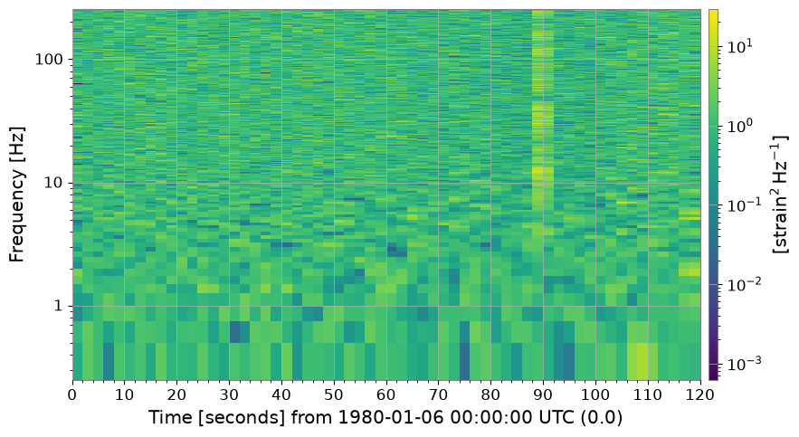
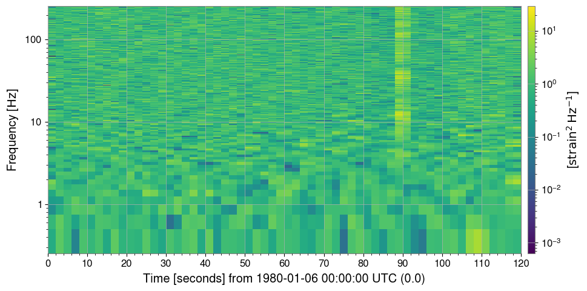
5. まとめ
全メソッドと目的の一覧：
[11]:
print("=" * 62)
print(f"{'Method':<22} {'Description':<38}")
print("-" * 62)
rows = [
("normalize('snr')", "÷ median PSD → SNR² map"),
("normalize('median')", "÷ median PSD (alias for snr)"),
("normalize('mean')", "÷ mean PSD"),
("normalize('percentile')","÷ Nth-percentile PSD"),
("normalize('reference')", "÷ user-supplied reference spectrum"),
("clean('threshold')", "Replace MAD-outlier pixels"),
("clean('rolling_median')","Divide by rolling-median trend"),
("clean('line_removal')", "Remove persistent narrowband lines"),
("clean('combined')", "threshold → rolling_median → line_removal"),
]
for m, d in rows:
print(f" {m:<20} {d}")
print("=" * 62)
==============================================================
Method Description
--------------------------------------------------------------
normalize('snr') ÷ median PSD → SNR² map
normalize('median') ÷ median PSD (alias for snr)
normalize('mean') ÷ mean PSD
normalize('percentile') ÷ Nth-percentile PSD
normalize('reference') ÷ user-supplied reference spectrum
clean('threshold') Replace MAD-outlier pixels
clean('rolling_median') Divide by rolling-median trend
clean('line_removal') Remove persistent narrowband lines
clean('combined') threshold → rolling_median → line_removal
==============================================================